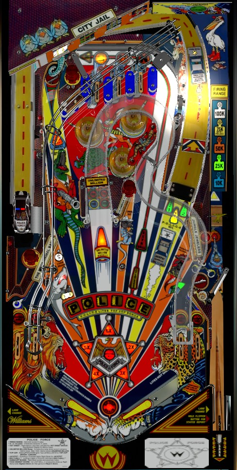

For changes made in the LX-5 competition-friendly code made by Richie Terry, scroll to the bottom of the page.
Lock balls at the right ramp for multiball. If lock is not lit, arrest a criminal by completing a bank of drop targets or shooting the back left saucer. Arrest all 4 criminals in one ball to light the right ramp for jackpot, worth up to 4,000,000 points. Combo the center ramp repeatedly from the right flipper for unlimited millions. On the final ball of the game, you can take the highest score- which means doubling your own score at minimum- by repeatedly hitting the right ramp without missing, but you only get one chance.
The below picture of Police Force's playfield was taken from the VPX recreation by SG1bsoN.
Plunge into the spinner. Each spin of the spinner cycles which award you will get: 10,000, 25,000, 50,000, 75,000 + Police letter, or 100,000, before cycling back to 10,000. The skill shot value is multiplied by the number of plunges you've made in the game to that point, with a max multiplier of 5x. Early on, take the 75,000 + Police letter to work toward the 3,000,000 Top Cop bonus, but later on, try for the 100,000 when it can be multiplied to as much as 500,000 points. Remember that plunges after locked balls increase the multiplier as well.
The top lanes are above the bumpers. The ball typically only ends up here after a shot to the top left saucer (from either direction). Roll through a unlit lane to light it. Lit lanes can be rotated in either direction with either flipper lane change. Lighting all 3 lanes to spell Gun increases the bonus multiplier by 1 up to a maximum of 6x and starts 10 seconds of Build Jackpot. During Build Jackpot, any switch hit adds 200 points to the jackpot, and jailing a criminal (see below) adds 200,000 to the jackpot. Max jackpot value is 4,000,000 points. On competition settings, the jackpot is never progressive in any way, so Build Jackpot is redundant. Completing Gun one more time after reaching 6x bonus multiplier awards a special.
There are 4 criminals: Loan Shark at the left standup targets, Machine Gun Croc at the back left saucer, Drug Rat at the center drop targets, and Diamond Weasel at the right drop targets. Complete a set of drop targets (or make one shot to the back left saucer via the left lane) to jail that criminal. If lock was not already lit at the right ramp, jailing a criminal will light at least one lock guaranteed. Jailing all 4 criminals in a single ball will light the right ramp for Jackpot for 15 seconds. On Arcade play, the jackpot is progressive across players and games; it can be anywhere from 1,000,000 to 4,000,000 points, and resets to 1,000,000 when collected. On Competition play, the jackpot is always 4,000,000 points. If the Jackpot is not collected in time, it will keep its value and the three drop target criminals will escape from jail, needing to be rejailed for another jackpot chance. Unlike most games that came after this, Jackpot is not required to be collected during multiball.
It is possible to have the Jackpot be just a tiny bit higher than 4,000,000, which can be done by hitting a few switches and then collecting the jackpot all while Build Jackpot is running. I've never seen this amount to more than about 4,002,000 as a jackpot, but in theory you might be able to sneak another 200,000 into the jackpot above the intended limit by re-jailing another criminal while the jackpot is lit. (Test this and see if that is actually how it works?)
Lock balls at the right ramp when a green arrow is flashing. If no green arrow is flashing, jail any criminal to light a lock. Lock 2 balls at the right ramp to start multiball. Generally, the two locks for the first multiball are lit for free, but once a multiball is played, jailing a criminal is required to light each lock. There are no multiball-specific scoring features, so use this time to jail more criminals and work toward jackpots with the safety net of a second ball in play. Locks can be stolen in a multiplayer game.
The center ramp can be shot from either flipper, but you must know how to combo it repeatedly from just the right flipper. The ramp starts at 50,000 points; hitting it repeatedly without missing or registering another switch will score 50,000, then 75,000, then 100,000, then 150,000, then unlimited 1,000,000 until you do miss. If you miss before collecting any Millions, the value resets to 50,000. If you do collect any Millions, the ramp value will instead reset to 5,000, and for the rest of the game it will take 8 consecutive ramp shots instead of 5 to reach unlimited millions (5,000 - 10,000 - 20,000 - 50,000 - 75,000 - 100,000 - 150,000 - millions). Scoring 1,000,000 from the center ramp for the first time also lights an extra ball at the lane to the right of the bumpers.
During multiball, instead of the ramp resetting when another switch is hit, the ramp will reset after a couple seconds of not being hit. If you put two balls up the ramp in very quick succession, the game may only recognize one of them.
When lit, the saucer in the back left of the game where Croc is jailed includes a mystery award called Hotsheet. Hotsheet is lit by the right in lane and has no time limit that I am aware of. Hotsheet will give one of 5 awards: Hot Score (random points, usually between 50,000 and 250,000), Hot Extra Ball, 5 Free Games, Spot Police Letter, and Hot Multiball. Multiball is only awarded if one ball is locked. I have never actually seen 5 Free Games be awarded.
There are 3 ways to earn a Police letter: from the 75,000 level of the skill shot, from the Hotsheet, or by shooting the right ramp when it is not lit for any other feature. Collecting 6 letters to spell Police lights the lane that goes to the right of the bumpers for Top Cop, which is always worth 3,000,000 points. Top Cop stays lit until collected or until the ball ends.
On the final ball of the game, you are offered the chance to Take the Highest Score at the right ramp. This feature overrides locks or multiball at the ramp, but Jackpot and Police letters can be lit alongside Take the Highest Score. In Take the Highest Score, you are given one attempt to shoot the ramp a consecutive number of times, which can be anywhere between 2 and 8. As soon as you make one full ramp shot, Take the Highest Score begins, and you must continue shoot the ramp consecutively the number of times shown on the display. If you miss or hit any other switch in the game, the opportunity ends and is lost. If you succeed, you receive a super jackpot equal to the current score of the game's leader- in a single player game, this will be your own score, so completing Take the Highest Score will double your score, but in a multiplayer game, this is the full score of whoever is in first place.
Take the Highest Score is the main reason why Police Force is a poor tournament game- the scoring itself is far too unbalanced and makes it far too easy for someone to steal a win, while also putting extra weight on turn order since player 4 may have higher scores to take than player 1 since more people have played all of their turns- but it's also really fun and really hype to pull off. The most consecutive ramp shots Take the Highest Score can require is 8, which is usually an absurd enough requirement to make it a non-factor in competition play or in a casual environment where it is disliked.
Police Force has a conventional in/out lane setup. The right in lane lights Hotsheet at the back left saucer. All four lanes can be lit for an extra ball, which can be moved via lane change with either flipper; however, the only extra ball that can be lit here is a consolation extra ball that lights for free on the final ball of the game if your average ball time has been below a pre-programmed value.
By default, there is a center peg between the flippers.
It's not clear what exactly advances bonus...presumably criminals' targets and top lanes, but not sure what else. Luckily, bonus is next to worthless on this game, even with a max multiplier of 6x. Bonus multiplier is raised 1x at a time by completing the Gun top lanes. Bonus multiplier is only carried to the next ball if the multiplier is at 3x or less; more than that, and the multiplier will be reset for that player's next turn. Completing Gun one more time after reaching 6x awards a special. Base bonus can never be carried from ball to ball. There is no midball bonus collect.
In competition/novelty play, specials score 100,000 points. Extra balls cannot be set to have a point value.
The jackpot timer can be anywhere from 4 to 99 seconds, default 15.
The Build Jackpot timer can be anywhere from 4 to 99 seconds, default 20.
The first Unlimited Millions at the center ramp can require anywhere from 2 to 8 consecutive shots. Default is 5. The maximum of 8 shots are always required to reach Unlimited Millions after the Million has been collected from the center ramp at least once.
Jailed criminals and Police letters can be carried over from ball to ball. By default, they are not.
The highest bonus multiplier that can be carried to the next ball can be set to anything from 2x to 6x, default 3x.